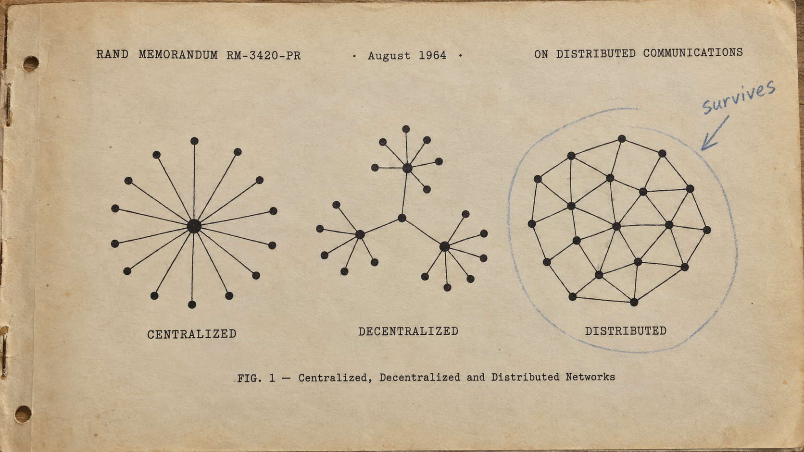

COMPUTER SCIENCE · U14a · NETWORKS
What a network is, how far a LAN reaches, who may talk to whom — and the four shapes a room can be wired in
Navigation: → next idea · ↓ dig deeper 🕳️ · badges top-right show whose exam it's on
Benefits are a different question (J23/12): sharing files and data · sharing hardware and software · central management (backup, security). The report: benefits confused with characteristics, and "gives each computer internet access" — nothing in the question said internet.
A difference names both sides. "A WAN covers a large area and a LAN a small one" scores; "a LAN is faster" does not — "the rate of transfer of data in a LAN is greater" does (J23 report).
Four client computers and one server form a full mesh: every pair has a link. Draw it and count the links. Cut one link: can each client still reach the server? Compare a switched star when one client cable is cut.
→ next idea · ↓ concise check, then optional full reference
A full mesh has every pair linked; a partial mesh has selected links. Redundancy protects only against failures for which an alternative path remains. The preserved Python reference may use a longer or different specimen; read its stated inputs before comparing.
→ next idea · ↓ concise check, then optional full reference
Four client computers and one server form a full mesh: every pair has a link. Draw it and count the links. Cut one link: can each client still reach the server? Compare a switched star when one client cable is cut.
→ next idea · ↓ concise check, then optional full reference
Model / physical implementation: A full mesh has every pair linked; a partial mesh has selected links. Redundancy protects only against failures for which an alternative path remains.
→ next idea · ↓ concise check, then optional full reference
DECLARE Trial, Topology, Devices, Cables, Reach : INTEGER
DECLARE Name, NText, CText, RText : STRING
FOR Trial ← 1 TO 3
INPUT Devices
FOR Topology ← 1 TO 3
CASE OF Topology
1 : Name ← "bus "
2 : Name ← "star"
3 : Name ← "mesh"
ENDCASE
IF Topology = 1 THEN
Cables ← 1
Reach ← Devices DIV 2
ELSE
IF Topology = 2 THEN
Cables ← Devices + 1Inputs: [4, 8, 20]. Predict the next state; the worked result follows.
Reach ← Devices - 1
ELSE
Cables ← Devices * (Devices + 1) DIV 2
Reach ← Devices
ENDIF
ENDIF
NText ← NUM_TO_STR(Devices)
IF Devices < 10 THEN
NText ← " " & NText
ENDIF
CText ← NUM_TO_STR(Cables)
WHILE LENGTH(CText) < 3
CText ← " " & CText
ENDWHILE
RText ← NUM_TO_STR(Reach)
IF Reach < 10 THENContinued program: keep the same variable values. Predict the next state; the worked result follows.
RText ← " " & RText
ENDIF
OUTPUT "n=", NText, " ", Name, " | cables ", CText, " | after one cut, ", RText, " of ", NText, " devices still reach the server"
NEXT Topology
NEXT TrialContinued program: keep the same variable values. Predict the next state; the worked result follows.
n= 4 bus | cables 1 | after one cut, 2 of 4 devices still reach the server n= 4 star | cables 5 | after one cut, 3 of 4 devices still reach the server n= 4 mesh | cables 10 | after one cut, 4 of 4 devices still reach the server n= 8 bus | cables 1 | after one cut, 4 of 8 devices still reach the server n= 8 star | cables 9 | after one cut, 7 of 8 devices still reach the server n= 8 mesh | cables 36 | after one cut, 8 of 8 devices still reach the server n=20 bus | cables 1 | after one cut, 10 of 20 devices still reach the server n=20 star | cables 21 | after one cut, 19 of 20 devices still reach the server n=20 mesh | cables 210 | after one cut, 20 of 20 devices still reach the server
Inputs 4,8,20 describe the illustrated models: server at one end of a bus with a cut just after its midpoint; star with one device link cut; full mesh with one link cut. The scalar formulas count the same reachable devices as the original graph search on these models. For the mesh, count one link per pair of devices including the server: n(n+1)/2. These formulas are not a general reachability algorithm.
Five observed arrival counts on a shared half-duplex medium are 0, 1, 2, 1, 3. Count moments with a collision. Explain why 'star' alone does not establish whether collisions can occur.
→ next idea · ↓ concise check, then optional full reference
Model / physical implementation: The supplied arrival counts are observations in a model. Topology, duplex mode and protocol are separate choices; no collision does not mean no congestion.
→ next idea · ↓ concise check, then optional full reference
DECLARE Trial, Devices, Moment, Arrivals, Collisions : INTEGER
DECLARE NText, CText : STRING
FOR Trial ← 1 TO 4
INPUT Devices
Collisions ← 0
FOR Moment ← 1 TO 20
INPUT Arrivals
IF Arrivals > 1 THEN
Collisions ← Collisions + 1
ENDIF
NEXT Moment
NText ← NUM_TO_STR(Devices)
CText ← NUM_TO_STR(Collisions)
IF Devices < 10 THEN
NText ← " " & NText
ENDIFInputs: [5, 0, 1, 1, 0, 1, 0, 0, 0, 0, 0, 1, 0, 1, 0, 0, 0, 0, 0, 0, 0, 10, 0, 2, 1, 1, 0, 0, 1, 0, 0, 0, 0, 1, 0, 1, 0, 0, 1, 1, 1, 0, 20, 0, 4, 2, 1, 1, 0, 0, 3, 0, 0, 0, 0, 1, 2, 0, 0, 0, 2, 4, 0, 40, 0, 1, 2, 3, 1, 2, 2, 2, 0, 4, 2, 2, 0, 2, 3, 2, 1, 4, 6, 1]. Predict the next state; the worked result follows.
IF Collisions < 10 THEN
CText ← " " & CText
ENDIF
OUTPUT NText, " devices | bus: ", CText, " collisions in 20 moments | star: 0 — each device has its own cable to the switch"
NEXT TrialContinued program: keep the same variable values. Predict the next state; the worked result follows.
5 devices | bus: 0 collisions in 20 moments | star: 0 — each device has its own cable to the switch 10 devices | bus: 1 collisions in 20 moments | star: 0 — each device has its own cable to the switch 20 devices | bus: 6 collisions in 20 moments | star: 0 — each device has its own cable to the switch 40 devices | bus: 13 collisions in 20 moments | star: 0 — each device has its own cable to the switch
For each supplied device count (5,10,20,40), twenty observed arrival counts follow. A collision moment has more than one arrival. The AS routine counts these observations; the optional original generates them randomly. The zero-star figure is the model’s independent-link collision assumption, not a claim that switches remove all congestion.
The J24 report: "'the server is the bank server and the client is the customer' is insufficient"; "many responses described the actions of the smartphone user." The J25 report: the browser is the client, "sometimes incorrectly identified as the server".
Drawbacks need a reason (two marks each): reduced security — because there is no central management, and it is only as secure as the weakest computer · no central backup — if one computer's data is not backed up it is lost to all · files are only available while the computer that holds them is switched on.
The J21 report: "just 'weak security' is not enough"; and "considerable confusion between a peer-to-peer network and a mesh topology" — a model is who serves whom; a topology is how the cables run.
The table's second column is the mark: "data is not stored on the client" scores nothing until it says the exam papers are stored on the server, not on the examiner's computer. And the converse-pair rule: "the server does most of the processing" then "the client does very little" is one characteristic, scored once.
The J23 report: a thick-client answer needs "at least one statement about the role of the client and another about the role of the server"; "many responses were too vague and could apply to any client-server model."
The classroom: twenty thin clients are cheap, centrally managed, and dead when the server is; twenty thick clients cost more, need updating one by one, and keep working when the server goes down.

Paul Baran, RAND Corporation, On Distributed Communications, 1964 — the figure every network textbook still redraws.
| term | 中文 | one line that earns the mark |
|---|---|---|
| LAN | 局域网 | covers a small geographical area, on privately owned infrastructure, at a high data transfer rate — wired or wireless |
| WAN | 广域网 | covers a large geographical area over external / leased infrastructure; connections often virtual; the internet is the largest |
| bus · star · mesh · hybrid | 总线 · 星型 · 网状 · 混合 | one shared cable (broadcast, collisions) · every device to one switch (checks the address, sends to one) · every device to several others (multiple routes) · any combination |
| switch | 交换机 | the star's centre: receives a packet, checks its destination address, sends it only to the intended receiver |
| client-server | 客户端-服务器 | the server stores the data and processes requests; the client sends requests and displays the response — name both in the scenario |
| peer-to-peer | 对等网络 | all computers of equal status; each provides its own resources and secures itself; no central server, so no central backup |
| thin client | 瘦客户端 | stores no data, does minimal processing, needs few resources, and nothing works without the server |
| thick client | 胖客户端 | does most of its own processing with resources installed locally; the server does little; it works when the network does not |